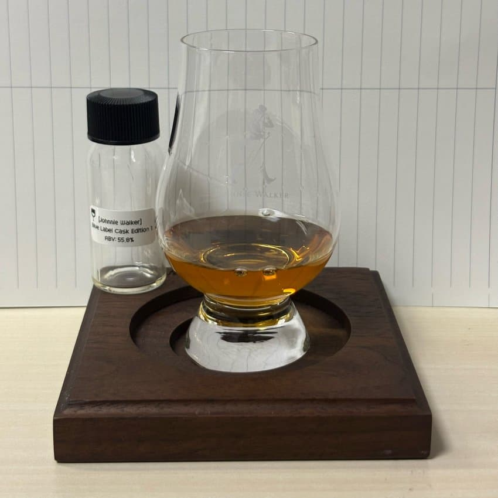

N 훈제 베이컨, 베리, 가죽, 버섯, 몰티함, 소금기, 요오드
- 가장 먼저 라가불린이 연상되는 강렬한 훈제 베이컨과 베리류의 향이 느껴진다
- 묵직한 가죽과 묵은 버섯의 향
- 이후 약한 몰티함이 올라옴
- 해조류쪽의 짭짤한 소금기와 치과 요오드의 향이 밑에 깔려있음
훈제 베이컨과 셰리 범벅인 향
P 감칠맛, 스모키, 요오드, 오크, 흑당시럽
- 입에 넣고 굴리자 마자 꽤나 강렬한 우마미가 느껴진다
- 존재감이 강한 스모키와 요오드 또한 존재함
- 질감은 입에서 꽤나 오일리하게 풀어지는 느낌
- 오크의 탄닌감은 꽤나 약하고 흑당시럽이 연상되는 부드러운 그레인 단맛이 지배적임
감칠맛과 달콤한 맛
F 요오드, 담배잎
- 은은하게 올라오는 요오드 여운
- 젖은 담배잎이 연상되는 향으로 마무리
요오드와 담배잎
————————————————————
총평
그동안 경험한 블루들과는 또 다른 캐릭터의 블루.
전체적으로 매우 잘 깎여있고 달달한 셰리피트 몰트 위스키 뉘앙스가 강하다. 블라인드로 먹으면 라가불린을 찍을 정도로 셰리도 강하고 요오드 피트도 강해 매력적이다.
적당한 가격에 보인다면 꼭 한 병 사고싶은 녀석.
————————————————————
재미로 붙여보는 점수는 4.2/5.0 (강한 장점: 훌륭한 훈제 베이컨 향의 셰리피트)
기준은
1.0 ~ 2.0: 큰 단점 있음
2.0 ~ 2.5: 약한 단점 있음
2.5 ~ 3.5: 큰 단점 없거나 약한 장점 있음
3.5 ~ 4.0: 장점 있음
4.0 ~ 4.5: 강한 장점 있음
4.5 ~ 5.0: 강한 장점이 있고 감동이 있음
————————————————————
나눔해주신 하쿠슈게이게이 님 감사합니다!
댓글 6개